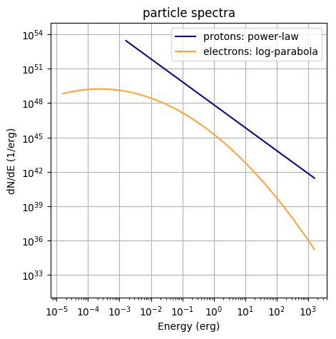
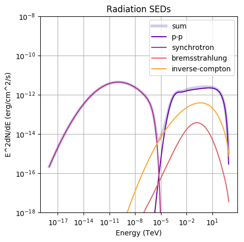

Step-by-step: broad-band radiation spectrum from a parent population of particles
Only a few steps are required to get the radiation spectra from a particle population. A complete working script can be found here (it creates the plots at the bottom of the page).
Step 1: Define a particle spectrum
Create a 2D vector (C++) or list / numpy array (python) representing a particle spectrum. This spectrum has to be differential in energy (1 / erg). For instance, a power-law can be defined like
e = np.logspace(-3,3,200) * gp.TeV_to_erg # energy axis
power_law = norm * e**-alpha # define power law
particles = list(zip(e,power_law)) # input needs to be 2D-array
Note: You have to make sure that the
normof the power-law is right. For example, if you normalise to an energy contentE_tot, it should be something likenorm = E_tot / np.sum(e[1:]*powerlaw[1:]*np.diff(e)).
Step 2: create a Radiation object and set it up
fr = gp.Radiation() # create the object
Step 3: Define relevant model parameters
b_field = 1e-5 # in Gauss, necessary for Synchrotron calculation
ambient_density = 1 # 1/cm^3, necessary for Bremsstrahlung and hadronic emission
# radiation field parameters, necessary for Inverse-Compton radiation.
temp = 2.7 # Temperature in K
edens = 0.25 * gp.eV_to_erg # energy density in erg / cm^-3
distance = 1e3 # in pc
Step 4: Set up the Radiation object with these parameters
fr.SetAmbientDensity(ambient_density)
fr.SetBField(b_field)
fr.AddThermalTargetPhotons(t_cmb,edens_cmb)
fr.SetDistance(distance)
Step 5: Set up the particle spectrum
You can decide what kind of particles you put. This will determine which radiation processes will be calculated.
fr.SetProtons(particles)
fr.SetElectrons(particles)
Step 6: Calculate the radiation spectra and retrieve them
The differential spectrum is calculated at a specified set of points in energy
space. The unit of these points in energy is erg. This set of points is
defined by a 1D-vector (C++) or list / numpy array (python), for example:
e = np.logspace(-6,15,bins) * gp.eV_to_erg # has to be in erg!
The radiation spectrum is calculated at these energies via
fr.CalculateDifferentialPhotonSpectrum(e)
Step 7: Get the spectra
There are different formats you can now extract:
- differential photon spectra (
dN/dEvsE, units:1 / erg / cm^2 / svserg)fr.GetTotalSpectrum() # sum of all components fr.GetPPSpectrum() # inelastic proton scattering fr.GetSynchrotronSpectrum()# synchrotron radiation fr.GetBremsstrahlungSpectrum() # bremsstrahlung fr.GetICSpectrum() # inverse-compton scattering - SEDs (
E^2*dN/dEvsE, units:erg / cm^2 / svsTeV)fr.Get*SED() # * denotes the radiation mechanisms above! - integrated flux (
int_e^inf dE dN/dE, units:1 / cm^2 / s)fr.GetIntegral*Flux(emin,emax) # emin, emax in erg! - integrated energy flux (
int_e^inf dE E*dN/dE, units:erg / cm^2 / s)fr.GetIntegral*EnergyFlux(emin,emax) # emin, emax in erg!
The so-retrieved spectra are in the format of 2D-vectors (C++) or 2D-lists (python).
Important Notes
- Specifying a distance value is optional. If set to non-zero value, photon flux from particle population at that distance will be calculated. Otherwise, the luminosity is calculated.
-
You only have to set the parameters relevant to the radiation process you want to calculate. For example, if you are only interested in Bremsstrahlung, you don’t have to specify the B-Field
-
For the IC process there are several ways to set up the radiation fields, including for SSC modelling or anisotropy, see here (Currently in construction)
-
There are different hadronic interaction models that you can choose from. See here how to do it!
-
If you have set up more than one IC target field, you can access the individual contributions to the resulting radiation spectrum via
fr.GetICSpectrum(field), wherefieldis the index of the field (e.g. the for the first field you have set it isfield=0, for the secondfield=1and so on). -
The
Particleclass inGAMERAcreates spectra already in the right format and is the natural ‘counterpart’ to the Radiation class. It allows, among other things, for time-dependent modeling. Tutorials how to use it are available, too.


More on the emission of hadronic origin
The current version of GAMERA includes the effect of heavier nuclei in the computation of the π⁰- and η-Decay. In this tutorial, it is described how to use the new functionalities.